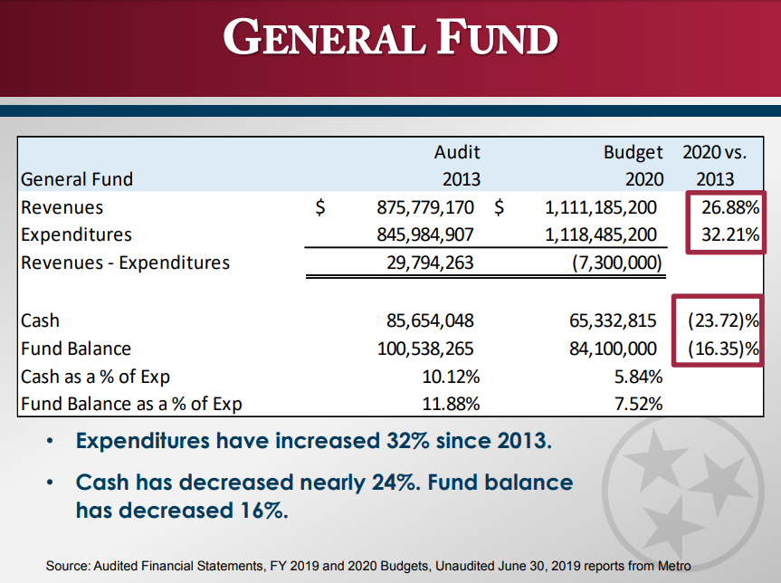

The Current State Of Metro Finances
Given my background as a CPA, it is ironic that my first blog will be about city finances. By now, many of you have heard of the Comptroller’s visit to Metro Council last week and the ensuing conversation about Metro water rates and budget. Below is an excerpt from the presentation about the state of Metro General Fund. In summary, according to the Comptroller, Nashville is in a financial crisis. Many of you may be frustrated, wondering how we got here and how we can move forward. It is important to note that while the situation is dire, it is also solvable.

How did we get here?
In simple terms, Metro has been spending more money than it is bringing in. I’ve outlined the five major problems that may have contributed to our current situation below.
Metro has been spending from its savings.
Increased expenses without a corresponding increase in revenue has created a deficit over the years. To make up the deficit Metro has been spending off of its savings (fund balance). The problem with this is that it is not sustainable. As with any budgeting, spending savings without increasing income eventually exhausts funds.
Metro has been borrowing too much money.
Metro has been funding its expenditures using loans/credit. The problem is that loans only provide temporary relief and do not resolve the larger issue. This can lead to problems when repayment is due and there aren’t enough funds to pay it. Metro is now at a point, according to the Comptroller, where it is close to exhausting its borrowing capabilities.
Metro has been selling off its assets.
In my opinion of all the temporary solutions, selling off assets is the worst. It is the equivalent of pawning personal belongings out of desperation. The sale of an asset is a non-recurring type of revenue. It only provides revenue for the year of sale and provides no benefit in subsequent years.
Metro does not have access to all of the city’s revenues.
Many may wonder, how can Metro not have enough revenue with all the recent growth and development? The problem is that not all money collected from these resources is available for use. A portion of the revenue collection is tied up in paying for bonds and other obligations. For example, part of Metro revenue, goes to the Music City Center. As part of an agreement with the State, monies collected are restricted to payment of obligations relating to building the center and not available for general use.
State funds are not meeting Metro’s needs.
Metro sometimes receives less funds from the State than anticipated. For example, state funding for education decreased between FY19 and FY18. When this happens, Metro must make up the difference using its funds.
Where do we go from here?
The situation is serious but also resolvable. Here are some proposed steps for moving forward.
Ensure greater oversight and accountability.
One thing that became obvious during last week’s presentation was the lack of communication between department heads, the administration, and the Council. Without being privy to all pertinent information, it is impossible for the Council to make the right decisions. To mitigate the challenges caused by lack of communication the Council, lead by CM Mendes, has proposed two ordinances:
- BL 2019-43: This bill requests that departments and the administration be required to share all communications from the State with the Council.
- BL 2019-77: This bill requests that the Council receives full cost itemizations of capital expenditure prior to approval.
Instate Budget Revisions and a New Cash Management Policy.
The Comptroller’s Office has demanded a cash management policy as well as a revised FY20 budget. The new finance director will be presenting this to the Council soon. I will update as soon as it is available.
Metro water rates increase in January 2020.
The average increase will be roughly 30%, an increase of about $4 per month for the average household. The additional funds from the water rates will go towards necessary water and sewage infrastructure updates. While an increase in bills is never an ideal solution, this is the only option Metro has as the State will enforce the increase with or without Metro’s approval. In order to minimize their water bills, residence are advised to decrease their water usage where possible. Tips to reduce your water bill can be found here.
Explore Recurring Sources of Revenue Including But Not Limited To Raising Property Taxes.
Over the past few years, Metro has attempted to reduce costs but this has proven ineffective. A conversation around increasing property taxes to create a source of recurring revenue is inevitable. Stay tuned for my next blog where I will go into further detail about the property taxes.
Improve Collaboration between the Council and the State.
As mentioned earlier, the State played a part in getting us here, and for that reason it seems only right that they play a part in getting us out. A great option, will be for the State to allow the amendment of the current Convention Center agreement, which will allow Metro access to the funds. We will also explore working with the State to close the funding gap, such as the decrease in school funding.
Though the state of Metro finance is a challenge, my colleagues and I are committed to working through it. I welcome your suggestions, comments and questions.